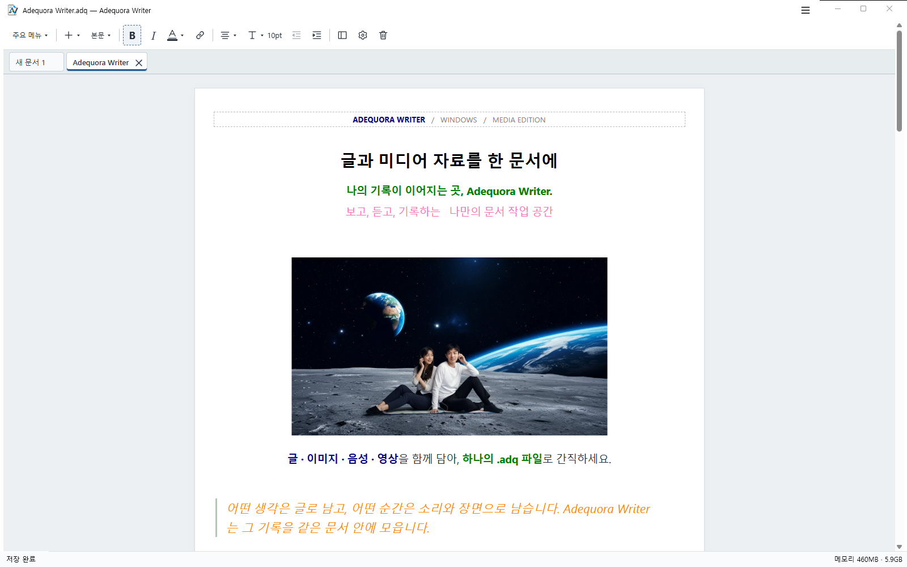

02 / 다시 이어 쓰기
멈췄던 생각부터,
다시 시작하세요.
정상 종료 후 다시 실행하면 이전 문서와
미저장 작업을 이어서 편집할 수 있습니다.
생각이 모이는 나만의 공간
글에 이미지와 소리, 영상을 더하세요.
내 PC에 보관하고, 하던 작업을 이어가는
Windows 문서 작성 앱.
Microsoft Store 출시 준비 중 · 첫 공개 버전 무료
CREATIVE NOTE / 01
한 장의 이미지에서 시작되는 나의 이야기.
샘플 자료로 구성한 문서 화면 예시
INSIDE ADEQUORA WRITER
Windows 1.0 출시 후보의 실제 편집 화면입니다.
공개 샘플 문서를 사용했습니다.

EVERYTHING, IN CONTEXT
여러 파일 사이를 오가던 기록을 하나의 흐름으로.
보고 듣는 자료와 나의 설명을 함께 정리하세요.
참고 이미지, 짧은 음성, 움직이는 장면까지.
본문 안에서 확인하고 재생하며
자료에 나만의 맥락을 더할 수 있습니다.
City Through Sound · 샘플 오디오
움직이는 장면에도 설명을 더하세요.
정상 종료 후 다시 실행하면 이전 문서와
미저장 작업을 이어서 편집할 수 있습니다.
로컬 파일로 보관하고, 필요한 문서에는
비밀번호를 설정해 내용과 포함 자산을 보호하세요.
작업 이어하기는 원본 파일 저장과 별개입니다. 변경 내용을 파일에 반영하려면 Ctrl+S로 저장하세요.
긴 문서도 원하는 부분으로.
프로젝트의 기록을 나란히.
표·목록·인용으로 또렷하게.
툴바·단축키·너비를 손에 맞게.
A DOCUMENT FOR YOUR DAY
배우고, 만들고, 기억하는 순간.
여러분만의 방식으로 채워보세요.
강의 자료와 참고 이미지,
내 말로 풀어 쓴 설명을 한곳에.
장면의 이미지와 소리를 모아
다음 이야기를 구상하세요.
사진·음성·영상 옆에
그 순간의 생각을 남겨두세요.
OPEN A LITTLE POSSIBILITY
이미지 2개, 오디오 2개, 영상 1개.
다양한 서식과 블록으로 구성한 샘플 문서입니다.
미리보기는 앱 없이 열 수 있습니다. 약 24.4 MB의 미디어 포함 문서이며, 앱의 실제 표시와 일부 다를 수 있습니다.
ADQ 문서 편집에는 호환되는 Adequora Writer가 필요합니다.
YOUR NEXT CHAPTER
첫 공개 버전 1.0은 무료로 제공할 예정입니다. 대한민국 Microsoft Store 출시를 준비하고 있으며 출시일은 아직 정하지 않았습니다.